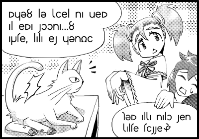

|
３コマ目(みーふぁ)


この亜麻色の髪の女の子は「お姉さんなみーふぁ」だよ。
私と同じくラーサを着てるね。

ラーサっていうのは、レインの着ているケープのことよ。
みーふぁはちょっと怒りんぼで、ふざけてばかりの「しあ」をよく叱ってるわ。
でも、「しあ」を一番可愛がってるのも彼女なのよね。
☆転写
miifa: myu? lu xiel na vem al ema soona...? arte, lala es yundi

「みゅ？」は1コマ目でやったね。
"lu xiel na vem al ema soona...?"か。最後のsoonaはseteのことだから、また確認の疑問文だね。
luは代名詞でやった覚えがあるよ。たしか、「彼・彼女」だよね。
あれ、猫ってtu（これ）じゃなくてlu（彼）なんだ？

どっちでも間違いではないわね。人間に近い存在と思っていればluになるから。

なるほどね。次のxielはなんだろ。動詞かな。
----
xiel
［遊離副詞］［形容詞］恐らく、もしかして、ひょっとして、まさか、もしかしたら、かもしれない
19:恣意
［語法］
aluut
----

遊離副詞と書いてあるね。また、語法のところにaluutを見よとあるね。
aluutの項はちょっとごちゃごちゃしてるから、私が解説するね。
「恐らく」とか「絶対」みたいな「確率を指す単語」は、動詞の前に置きます。
「いつも」とか「たまに」みたいな「頻度を表す単語」も同じです。

命令でやった副詞のreと同じく、動詞の前に置くのね。文法的には命令のreや否定のenの仲間か。
naはどういう意味だろう。xielは動詞の前に置くんだから、naは動詞だよね。
……えぇと、感じるという意味か。
----
na
［名詞］心
［動詞］yulを感じる
［文末純詞］～のようだ。なんとなくそう感じた推量。
----

なにを感じるんだろ。vemか。べむ、べむ……よーうかーい、にーんげーん(略
あら、vemは「怖い」という意味じゃないの。見事な偶然ね！

（紫苑、妖怪人間はbemだお……）
a nonは「私に」だから、これは怖がってる相手を指すのね。
つまり、"lu xiel na vem al ema soona...?"は「ひょっとして、彼は私を怖がっている？」という意味か。
ははぁ、よく見ると「ひだまり」の表情が1,2コマ目から変わってるわ。こわばった感じ。
それで、みーふぁは「あれ、この子怖がってない？」って言ってるのか。

次のarteは英語の"Oh my god!"みたいなものよ。「あらまぁ」って感じね。
lalaっていうのも文頭で驚きを表す言葉よ。

esは「どうして」って意味みたいね。
yundiはeyoのことか。
----
eyo
［文末純詞］［milia］～かなぁ
古:eyo。リディアが使いはじめた文末の疑問辞。
［語法］
その文の真偽に対して不確定であるというムードを表わす。
----
eyoは「～かなぁ」か。
つまり、「あらまぁ、どうしてかなぁ」という意味ね。
猫に怖がられたからそう言ったのね。
さて、次の吹き出しに移りましょう。

スクロールが面倒だから、もう一回絵を置いておくわね。

右下は「しあ」のツッコミよ。
最後のマークはアシュテという文字で、日本語の(笑)にあたる文字だよ。axteで転写します。
☆転写
xia: kum alxa nalo sen xalte tisse (axte
kumは……動物ね。
レイン、alxaがよく分からないよ。
----
alxa
［形容詞］～というもの
古:alxa（というもの総体）。xaxa（存在/存在）と同語源。ただしalxaとxaxaは別の意味を持った別の語
［語法］
名詞に付き、以下の説明がその名詞全般に渡ることを指す。min alxaは「女というものは」という意味で、女全般を指す。論理的にはil minと同じだが、il minはｅｖｅｒｙと同じように個々の成員に焦点が当たっている。
【用例】
vik alxa et ibet a vort. 男というものはいつまでも幼稚なものである。
----
「～というものは」という訳で、ぜんぶひっくるめて一般化するときに使うの。
kum alxaで「動物というものは」、min alxaで「女というものは」という意味になります。

なるほど♪
senは副詞でやったね。「～できる」だっけ。nalo senで「察することができる」か。
xalteは目的語で、「雰囲気」という意味のようね。つまり、「雰囲気を察することができる」ってことか。
あ、要するに「空気が読める」ってことじゃない？
そうだね。
最後のtisseはseteと同じく文末純詞で、相手に情報を与えるときに使うよ。
「～だよ」っていう感じだね。

すると、"kum alxa nalo sen xalte tisse (axte"は「動物っていうのは空気が読めるのよ(笑」ってことか。
はぁはぁ、「怒りんぼのみーふぁだから猫が怖がってるのよ」っていうツッコミを「しあ」はしてるのね。
うーん、たったこれだけの授業で、アルカでツッコミまで読めるようになってしまったよ……(^-^;
辞書って凄いなぁ。覚えなくても読めるんだもん。
さぁ、いよいよオチね！
|